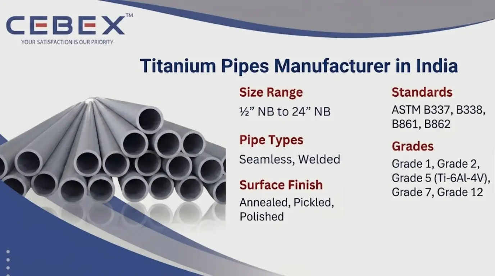

Leading Manufacturer & Exporter of ASTM B338, B861, Grade 2, Grade 5 Titanium Pipes
In high-performance industrial environments, material selection plays a critical role in ensuring durability, corrosion resistance, and operational efficiency. As a leading Titanium Pipe Manufacturer in India, CEBEX STEEL INDIA specializes in supplying premium-quality titanium pipes designed for demanding applications across global industries.
Titanium pipes are known for their exceptional strength-to-weight ratio, superior corrosion resistance, and long service life, making them ideal for aggressive environments such as seawater, chemical processing, and high-temperature systems. Our pipes are manufactured in compliance with international standards such as ASTM, ASME, DIN, and EN, ensuring reliability and performance in critical applications.
With advanced manufacturing capabilities and strict quality control processes, we deliver titanium pipes that meet the highest expectations of EPC contractors, engineers, and procurement specialists worldwide.

Choosing the right Titanium Pipe Manufacturer in India is essential for ensuring product quality, safety, and long-term performance. CEBEX STEEL INDIA is recognized for its strong technical expertise, global supply capability, and commitment to quality standards.
We manufacture titanium pipes in accordance with ASTM B338, ASTM B337, ASTM B861, and ASTM B862, ensuring full compliance with international specifications. Each pipe undergoes rigorous inspection including PMI testing, ultrasonic testing, hydrostatic testing, and mechanical evaluation.
Our facility maintains complete traceability from raw material to finished product, supported by heat numbers and batch records. All shipments include EN 10204 3.1 / 3.2 Mill Test Certificates, ensuring transparency and compliance.
We also provide secure export packaging, timely delivery, and complete documentation support for shipments to Africa, the Middle East, Europe, and Southeast Asia.
Our titanium pipes are engineered for high performance in corrosive and high-temperature environments.
| Feature | Specification / Detail |
|---|---|
| Product Type | Titanium Pipes |
| Standards | ASTM B337, B338, B861, B862 |
| Grades | Grade 1, Grade 2, Grade 5 (Ti-6Al-4V), Grade 7, Grade 12 |
| Types | Seamless, Welded |
| Size Range | –– NB to 24– NB |
| Schedules | SCH 5 to SCH XXS |
| Surface Finish | Annealed, Pickled, Polished |
| Grade | Description | Applications |
|---|---|---|
| Grade 1 | Commercially Pure Titanium | Chemical processing |
| Grade 2 | Most widely used grade | Marine, desalination |
| Grade 5 | Ti-6Al-4V Alloy | Aerospace, high strength |
| Grade 7 | Pd Alloyed Titanium | Acidic environments |
| Grade 12 | Enhanced corrosion resistance | Heat exchangers |
| Category | Standards |
|---|---|
| Pipe Standards | ASTM B337, B338, B861, B862 |
| ASME Standards | ASME SB338, SB861 |
| Dimensional Standards | ASME B36.10, B36.19 |
| International Standards | DIN, EN, ISO |
We offer a complete range of titanium pipes designed for various industrial applications:
Seamless Titanium Pipes – Ideal for high-pressure and critical applications
Welded Titanium Pipes – Cost-effective for larger diameters
Custom Titanium Pipes – Manufactured as per drawings and specifications
Our engineering team ensures precise dimensional accuracy and compliance with project requirements.
| Property | Value Range |
|---|---|
| Tensile Strength | 240 – 950 MPa |
| Yield Strength | 170 – 880 MPa |
| Elongation | 20 – 40% |
| Hardness | 120 – 350 HB |
Titanium–s unique composition provides excellent resistance to chlorides, seawater, acids, and oxidation.
| Size (NB) | OD (mm) | Thickness (mm) | Weight (kg/m) |
|---|---|---|---|
| –– | 21.3 | 2.77 | 1.27 |
| 1– | 33.4 | 3.38 | 2.68 |
| 2– | 60.3 | 3.91 | 5.44 |
| 4– | 114.3 | 6.02 | 15.32 |
| 8– | 219.1 | 8.18 | 43.39 |
Custom sizes and specifications are available on request.
Titanium pipes are widely used in industries requiring high corrosion resistance and reliability:
Chemical processing plants
Marine and offshore systems
Desalination plants
Power generation
Aerospace industry
Heat exchangers and condensers
Their resistance to seawater, acids, and extreme temperatures makes them ideal for critical environments.
All titanium pipes undergo strict quality checks, including:
PMI (Positive Material Identification)
Ultrasonic testing (UT)
Hydrostatic testing
Mechanical testing
Each product is supplied with EN 10204 3.1 / 3.2 certification, ensuring complete traceability and compliance.
We ensure safe and secure delivery with:
Export-grade wooden cases and bundles
Proper marking with grade, size, and heat number
Complete export documentation
We export to Africa, Middle East, Europe, and Southeast Asia, ensuring timely and reliable shipments.
As a trusted Titanium Pipe Manufacturer in India, we supply high-quality pipes to major projects across Africa. Our export team ensures smooth logistics, documentation, and compliance with regional standards. Our titanium pipes are widely used in Nigeria, Egypt, Kenya, South Africa, and Ethiopia, supporting industries such as oil & gas, marine, and infrastructure.
In addition to Titanium Pipes, we are also recognized as a leading Inconel Pipes Manufacturer in India, Hastelloy Pipes Manufacturer in India, Duplex Stainless Steel Pipe Manufacturer in India, and Super Duplex Pipe Manufacturer in India. We also supply Nickel Alloy Pipes, SMO 254 Pipes, Stainless Steel Pipes, Aluminium Pipes, Copper Pipes, Copper Nickel Pipes, Brass Pipes, Carbon Steel Pipes, and Alloy Steel Pipes to support diverse industrial requirements. These high-performance materials are engineered for extreme environments where superior corrosion resistance, strength, and long-term reliability are essential, and our technical team can help you select the right grade and specification for your application.
High-quality certified materials
Strong technical expertise
Competitive pricing
Global export capability
Reliable delivery and support
We are committed to delivering consistent performance and long-term value.
We supply Grade 1, Grade 2, Grade 5, Grade 7, and Grade 12 Titanium Pipes based on application requirements.
Our pipes comply with ASTM B337, B338, B861, B862, ASME, DIN, and EN standards.
Seamless pipes are stronger and used for high-pressure applications, while welded pipes are cost-effective for larger sizes.
We supply Titanium Pipes from –– NB to 24– NB with SCH 5 to SCH XXS and custom sizes.
Yes, all pipes come with EN 10204 3.1 / 3.2 Mill Test Certificates and full inspection reports.